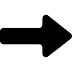

Model List
- VGG
- AlexNet
- GoogLeNet
Model
Overview
Input
Model
Output
ABSTRACT
VGG는 대규모 이미지 및 비디오 인식에 쓰이는 기계 학습 모델인 Convolutional Neural
Network(CNN)의 일종으로, 2015년(논문 발표일 기준) Oxford 대학의 K.Simonyan과
A. Zisserman에 의해 제시되었다. 이 모델은 이미지를 입력으로 받아 convolution과
pooling, 그리고 softmax로 이루어진 여러 layer를 거쳐 이미지 분류 결과를 도출한다.
성능을 높이기 위해 기존에 존재하던 다른 모델들에 비해 작은 크기의 filter를 사용하여
convolution layer의 수를 늘린 것이 특징으로, 간단한 구조를 가지면서도 준수한 성능을 낸다.
ILSVRC-2014 challenge의 classification task에서 GoogLeNet에 이어 2위, single-net
performance에서는 1위를 기록하였다.
Input Processing
VGG는 입력으로 각각의 픽셀의 RGB 값에서 이미지 내에서의 RGB 값의 평균을 빼주는 전처리 과정을 거친 244 x 244 RGB image를 받는다. 이때 각각의 픽셀마다 R, G, B 값을 따로 가지므로, 결국 VGG 내부에서 받아들이는 입력의 형태는 244 x 244 x 3의 3차원 행렬이 된다.
VGG의 내부에서는 3 x 3 또는 1 x 1 convolution filter를 사용하는 convolution과 max-pooling layer를 이용한
spatial pooling,
3개의 Fully-Connected(FC) layer를 통한 ILSVRC classification, 그리고 그 결과를 이용한 softmax
operation이 일어난다.
Layer의
개수가 다른 여러 configuration이 존재하지만, 기본적으로 모든 버전에서 1~4회의 convolution을 수행하고 1회의 max-pooling을 수행하는 작업을 5회 반복하고,
2개의 4096-way FC layer와 1개의 1000-way FC layer를 거친 후 최종적으로 softmax layer를 거치는 점은 동일하다. 위 그림은 그 중 성능이 가장 좋고
layer 수가 가장 많은 configuration E를 나타낸 것이다.
Reference: ImageNet Large Scale Visual Recognition Challenge. IJCV, 2015
Model architecture
Try hovering your mouse on top of the model image!
(You will be navigated to the section explaining the selected layer.)


컴퓨터가 어떤 식으로 이미지 분류를 하는지에 앞서 인간이 어떤 방식으로 이미지 분류를 하는지 살펴보자.
가령, 강아지와 고양이를 구분하는 task를 생각해보자. 인간은 강아지의 눈, 코,
귀, 꼬리와 고양이의 눈, 코, 귀, 꼬리 모양을 알고 있고 이미지 전체가 아니라
눈, 코, 귀, 꼬리 같은 특정 부분을 보고 이미지를 구분한다.
때문에 강아지나 고양이의 일부분만을 찍은
사진으로도 둘을 구분하는데 어려움이 없다.
컴퓨터도 이와 유사한 과정을 feature extraction이라는 과정을 통해 수행한다.
Convolution Neural Network은 feature extraction을 위해
convolution과 subsampling을 반복해서 수행하게 된다. 그 후에는 feature extraction을 통해 얻어진 특징 정보를 활용해 강아지인지
고양이인지
classifier를 통해 분류하게 된다. 여기서 convolution, subsampling, classifier를 차례로 하나씩 살펴보겠다.
먼저 Convolution을 살펴보자. Convolution과정에서는 컴퓨터가 숫자(pixel값)의 나열에서
특징을 알아낼 수 있도록 input 이미지의 pixel값 행렬에 이보다 작은 크기의 행렬인 filter를
거쳐서 Feature map을 생성하게 된다. ‘커널’이라고도 부르는 이 ‘필터’가 어떤 값을 가지는지에
따라 이미지의 여러 특징들을 알아낼 수 있다.
아래 interactive panel을 보자. 우리는
필터 종류를 바꿈에 따라 전체 edge를 추출한 feature map을 얻을 수도 있고, 가로선을
추출한 feature map을 얻을 수도 있고 세로선들만 추출한 feature map을 얻을 수도 있다.
한마디로, 우리는 filter를 통과시켜서 사진의 특정 패턴을 찾아내게 되는데 이런 filter들을
쌓음으로서 우리는 ‘패턴들의 패턴’, 즉 귀 혹은 눈 같이 더 큰 패턴들을 찾을 수 있게 된다.
이 때 필터는 학습 가능한 것이며, 필터 행렬들의 값을 weight라고 부른다. 이 weight들을
적절히 update해가면서 이미지의 특징을 가장 잘 뽑아내는 필터 조합을 찾는 것이
학습과정의 목표이다.
1. Choose an input image


4. Hover over the input and checkout the pooling proces!
2. Choose a filter


Edge
Vertical Edge
Horizontal Edge
filter
☐ Input Not selected.
☑ Input selected.
☐ Filter Not selected.
☑ Filter selected.
3.
Output


| Pooling
Pooling은 입력으로 주어진 행렬을 작은 조각으로 나누어 거기에서 특징적인 값만을 뽑아
원래의 행렬보다 작아진 행렬을 출력하는 과정으로, subsampling이라고도 한다.
Pooling은 앞서 언급한 특징적인 값이 무엇이냐에 따라 여러 종류가 존재하는데,
해당 조각에서 가장 큰 값을 뽑는 max pooling, 해당 조각의 값들의 평균을 뽑는
average pooling 등이 있다.
Pooling은 이미지의 크기를 줄여 연산 횟수와 parameter 수 등을 줄이고, 특정 값만을 뽑아내어 feature를 더 강조하는
효과를 통해 성능을 높이는 데에 도움이 된다. 또한, 입력되는 이미지가 조금 바뀌더라도 pooling의 결과의 변화는 이미지의 변화보다 훨씬 적기 때문에 안정적으로 결과를 뽑아낼
수 있어 머신러닝에서 널리 사용되고 있다.
1. Choose an input image


4. Hover over the input and checkout the pooling proces!
2. Choose a pooling mode


Max Pooling
Average Pooling
pooling
☐ Input Not selected.
☑ Input selected.
☐ Pooling Layer Not selected.
☑ Pooling Layer selected.
3.
Output

Reference: https://supermemi.tistory.com/16
| Softmax
Softmax는 입력을 받아 0부터 1사이의 여러 개의 값을 출력하는 함수로,
출력값들의 합은 항상 1이 된다는 특성이 있다.
그렇기 때문에 여러 개의 값으로 이루어진 벡터를
입력으로 넣으면 벡터의 각 원소를 총합이 1이 되도록
normalize한 값으로 이루어진 벡터를 얻을 수 있게 된다.
만약 입력으로 준 벡터의 각 값이 이미지에 특정 class에
해당하는 filter를 적용한 결과값이라고 가정하면,
이에 대응하는 출력값은 이미지가 해당 class에 속할 확률이라고 생각해도 무방한 것이다.
이러한 특성을 이용하여
머신러닝에서는 분류하고자 하는 이미지가 속할 확률이 가장 큰 class를 추출하는 데에 사용된다.
그리고 이 경우에 출력되는 벡터에서 값이 최대가 되는 원소가 1이 아닐 경우가
있는데, 이때에는 1과 해당 값의 차가 학습에 사용되어 filter의 값 등에 영향을 줄 수 있다.
Reference:
https://m.blog.naver.com/wideeyed/221021710286
https://en.wikipedia.org/wiki/Softmax_function
https://wikidocs.net/35476
Output
이 모델의 목적은 고정된 크기의 RGB image를 받아 ILSVRC classification을 진행하는 것이다. ILSVRC classification은 이미지가 1000개의 겹치지 않는 class 중에서 어느 class에 속하는 이미지인지를 분류하는 것이므로, VGG는 ILSVRC에서 제공하는, 1000개의 class로 이루어진 list의 원소 하나를 출력하게 된다. 예를 들어, 위의 과정들을 거친 결과 이 이미지가 130번 class에 속할 확률이 가장 높다고 판단된다면, 130을 출력하게 되는 것이다.
Reference:
https://en.wikipedia.org/wiki/ImageNet


This article covers the paper "VERY DEEP CONVOLUTIONAL NETWORKS FOR LARGE-SCALE IMAGE RECOGNITION" from page 1- page3 (Abstraction ~ 2.CONVNET CONFIGURATIONS).